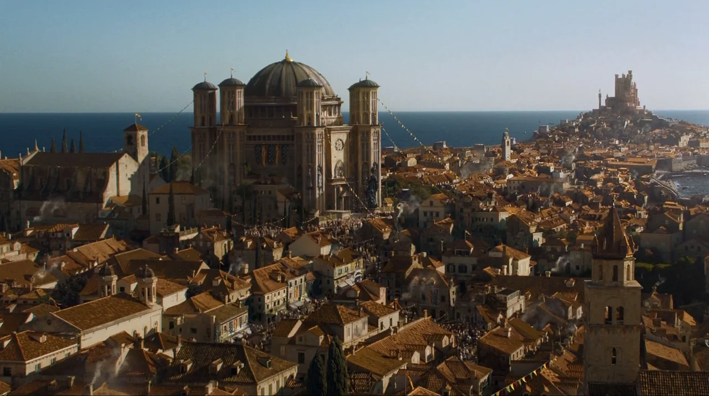
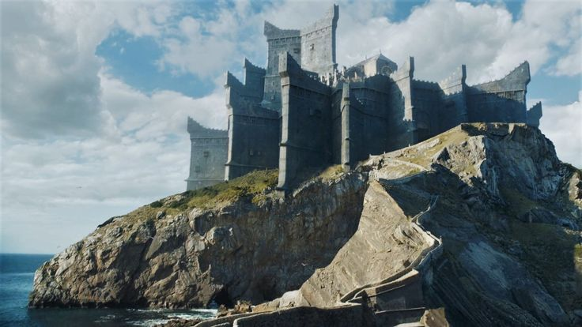
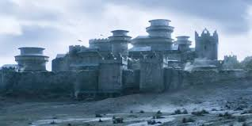
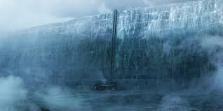
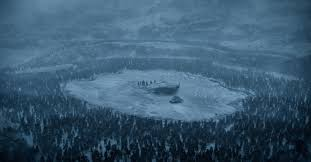
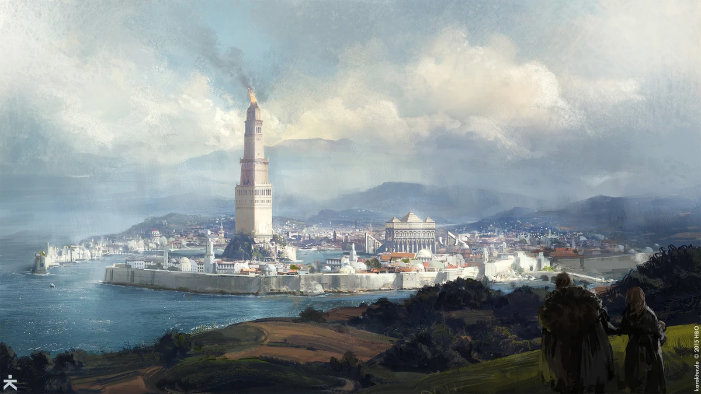
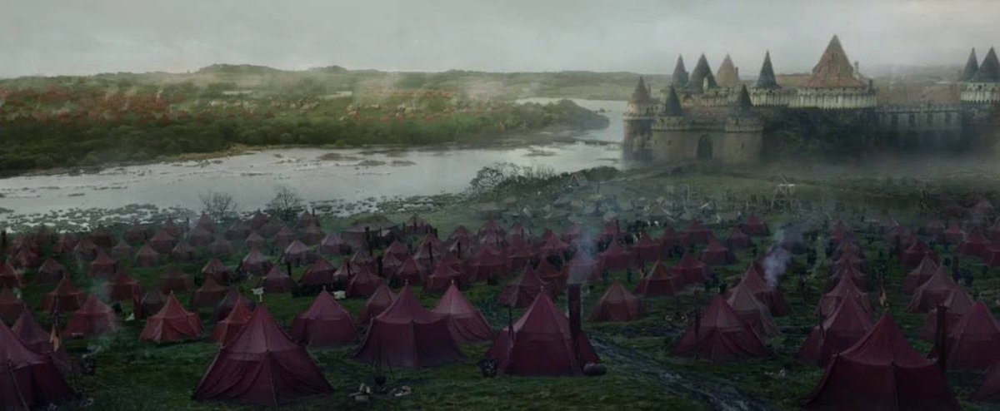
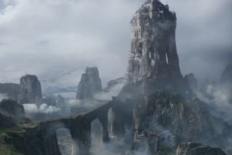
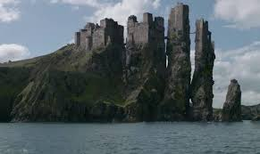

The geography of Westeros and Essos is shaped by powerful political centers and culturally distinct regions. King’s Landing stands at the heart of the Seven Kingdoms as a symbol of royal authority, while Dragonstone represents the origins and
strength of House Targaryen. Further north, Winterfell and the Wall anchor a harsher world shaped by ancient threats, while the exotic landscapes of Essos—from the Free Cities to Slaver’s Bay—expand the story’s scale and diversity. Each location
carries centuries of history and conflict, influencing the struggles of characters and the shifting balance of power. Regions like the Riverlands, Dorne, and the Vale each contribute unique customs, climates, and loyalties, making the world
feel richly interconnected yet constantly divided.

King’s Landing
Capital of the Seven Kingdoms; home to the Red Keep and the Iron Throne.

Dragonstone
Volcanic island and ancestral Targaryen seat; major dragon-hatching site.

Winterfell
Ancient northern stronghold of House Stark; built atop hot springs.

The Wall
A colossal frozen barrier defending the realms of men from the far North; home to the Night’s Watch.

The North Beyond the Wall
Harsh wilderness inhabited by Free Folk, giants, and White Walkers.

Oldtown
Seat of the Hightowers; home to the Citadel and the Faith’s origins.

The Riverlands
A central region often caught in wars; includes Riverrun and Harrenhal.

The Vale of Arryn
Mountainous, isolated region guarded by the Eyrie.

The Iron Islands
Harsh seafaring land ruled by House Greyjoy.

Dorne
Southern desert kingdom known for a hot climate and different customs.